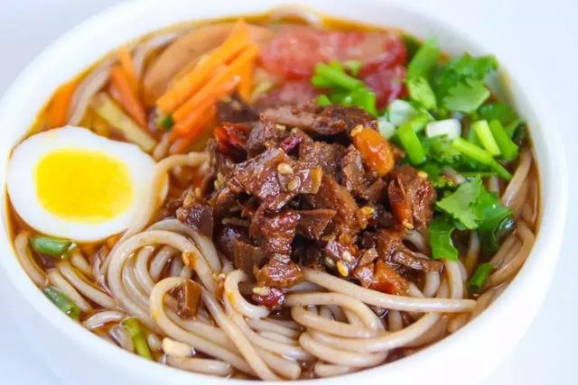
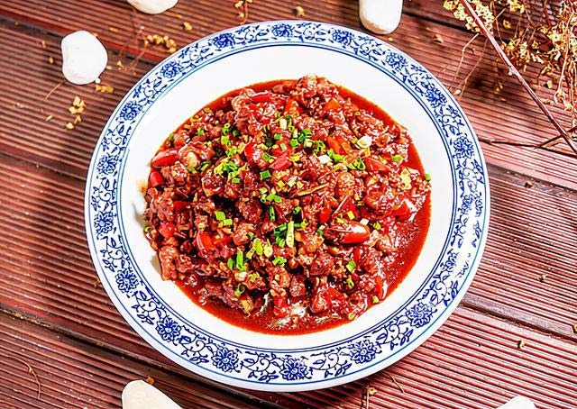
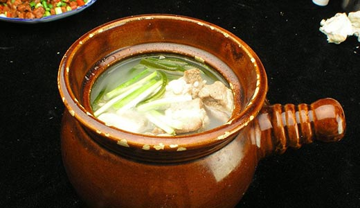
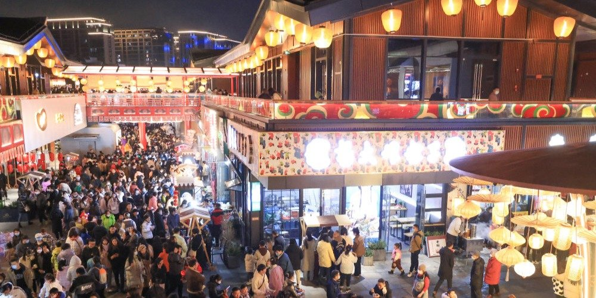
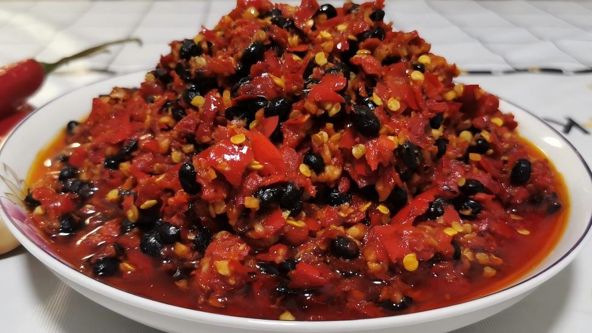

Spicy, bold, and deeply local
Nanchang cuisine is known for its strong flavors, especially chili and garlic. But beyond the spice, it reflects the lifestyle, climate, and culture of Jiangxi.

A classic breakfast choice. Soft rice noodles mixed with chili oil, peanuts, and pickled vegetables.

Local dishes are often cooked with fresh chili and garlic, creating bold and unforgettable flavors.

Slow-cooked soups that bring warmth and balance to the spicy meals.

As night falls, Nanchang transforms into a vibrant food city. Street vendors line the roads with grills, snacks, and local specialties.
The atmosphere is lively, noisy, and full of energy — an essential part of the city's identity.
The hot and humid climate of Jiangxi has influenced local eating habits. Spicy food helps improve appetite and reduce humidity in the body.
Over time, this has become a defining characteristic of Nanchang cuisine.

Start with rice noodles and soup.
Explore local restaurants and try stir-fried dishes.
End your day at a busy night market.